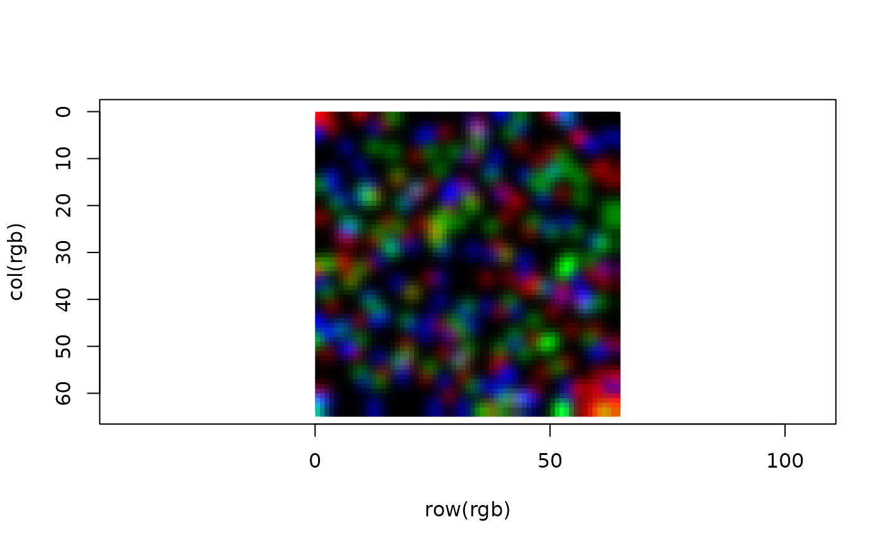

The SpatialDataImage and -Label classes represent
elements from a SpatialData's images/ and labels/
layers, respectively. In both cases, these are represented as a
ZarrArray (data slot), and associated with .zattrs
represented as SpatialDataAttrs (meta slot);
a list of metadata stores other arbitrary info.
Currently defined methods (here, x is a SpatialDataArray):
data/meta(x) access underlying data/.zattrs
data_type(x) gets the underlying data type (e.g., float64)
channels(x) gets channel names (applies to images only)
dim(x) returns the dimensions of data(x)
length(x) returns the length of data(x)
SpatialDataImage(
data = list(),
meta = SpatialDataAttrs(),
metadata = list(),
...
)
SpatialDataLabel(
data = list(),
meta = SpatialDataAttrs(),
metadata = list(),
...
)
# S4 method for class 'SpatialDataArray'
dim(x)
# S4 method for class 'SpatialDataArray'
length(x)
# S4 method for class 'SpatialDataArray'
data_type(x)
# S4 method for class 'DelayedArray'
data_type(x)
# S4 method for class 'SpatialDataAttrs'
channels(x, ...)
# S4 method for class 'SpatialDataImage'
channels(x, ...)
# S4 method for class 'SpatialDataElement'
channels(x, ...)
# S4 method for class 'SpatialDataImage,ANY,ANY,ANY'
x[i, j, k, ..., drop = FALSE]
# S4 method for class 'SpatialDataLabel,ANY,ANY,ANY'
x[i, j, ..., drop = FALSE]SpatialDataArray
zs <- file.path("extdata", "blobs.zarr")
zs <- system.file(zs, package="SpatialData")
# get path to 'i'th element in layer 'l'
fn <- \(l, i=1) list.dirs(file.path(zs, l), recursive=FALSE)[i]
# label
(x <- readLabel(fn("labels")))
#> class: SpatialDataLabel
#> Scales (1): (64,64)
x[1:10, 1:10]
#> class: SpatialDataLabel
#> Scales (1): (10,10)
meta(x)
#> class: SpatialDataAttrs
#> axes(2):
#> - name: y x
#> - type: space space
#> coordTrans(5):
#> - global: (identity)
#> - scale: (scale:[3,2])
#> - translation: (translation:[-50,10])
#> - affine: (affine:[[20,10,30],[50,40,60]])
#> - sequence: (scale:[3,2]), (translation:[-50,10])
#> datasets(1): 0
#> - 0: (scale:[1,1])
# image
readImage(fn("images"))
#> class: SpatialDataImage
#> Scales (1): (3,64,64)
# multi-scale
(x <- readImage(fn("images", 2)))
#> class: SpatialDataImage (MultiScale)
#> Scales (3): (3,64,64 3,32,32 3,16,16)
channels(x)
#> label label label
#> 0 1 2
dim(data(x, 1)) # highest res.
#> [1] 3 64 64
dim(data(x, Inf)) # lowest res.
#> [1] 3 16 16
# RGB visual
rgb <- apply(
data(x, 1), c(2, 3),
\(.) rgb(.[1], .[2], .[3]))
plot(
row(rgb), col(rgb), col=rgb,
pch=15, asp=1, ylim=c(ncol(rgb), 0))
